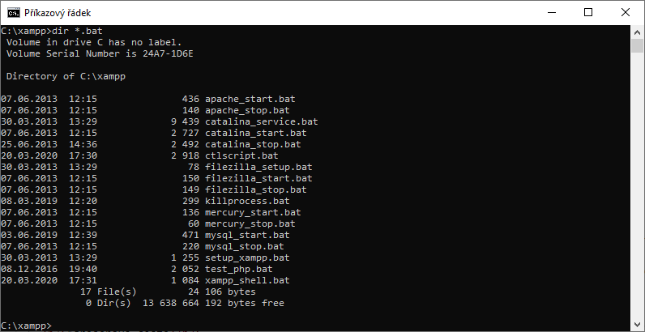

Soubory a adresáře
Soubor (file) je množina souvisejících dat uložených na diskové jednotce. Název souboru je obvykle tvořen jménem (ve Windows až 254 znaků) a příponou, která naznačuje typ souboru. K dalším vlastnostem souboru patří jeho velikost, autor (vlastník), datum vytvoření, datum změny, atributy, přístupová práva apod.
K přehlednější práci se soubory slouží systém adresářů či složek (directories, folders).
Adresáře tvoří na disku typicky hierarchickou strukturu (tree - strom);
základem je tzv. kořenový adresář (root) označený symbolem „/“ (Unix, Linux), nebo
„\“
(Windows).
Každý adresář může obsahovat soubory i podadresáře (subdirectories).
Cesta (path) vyjadřuje umístění souboru vždy směrem od nejvyššího adresáře:
C:\XAMPP\mysql\bin\mysql.exe.
Pro operace se soubory využíváme někdy
zástupné znaky (wildcards):
- symbol * nahrazuje v názvu libovolný počet znaků (např. *.*);
- symbol ? nahrazuje jeden libovolný znak (např. s?s.txt).

Programové soubory
Programové soubory obsahují instrukce, podle nichž procesor ve spolupráci s dalšími hardwarovými komponentami plní konkrétní úlohy. Mohou být uloženy v již zkompilované binární podobě (nejčastěji ve strojovém kódu pro danou platformu), nebo ve zdrojovém kódu, obsahujícím příkazy určitého programovacího jazyka. Mezi programové soubory můžeme zařadit také skripty, soubory instrukcí v textové podobě, které ke svému spuštění vyžadují speciální program - interpret.
Větší programy jsou tvořeny programovými knihovnami (runtime libraries), speciálními soubory s připravenými funkcemi, které programy využívají pro svůj běh. Ve Windows to jsou např. soubory DRV a SYS (obsahující zejména ovladače čili drivery, ale i systémové funkce), nebo také DLL (dynamic linking library - dynamicky linkované knihovny), které mohou být podle potřeby za běhu (dynamicky) připojeny k jednomu i více programům.
Některé soubory s tzv. spustitelnou příponou (např. .exe a .com ve Windows, .sh v Linuxu) slouží ke spuštění programu - aktivaci procesu v rámci operačního systému. Za rezidentní programy (služby, démony) označujeme ty procesy, které jsou spuštěny automaticky po iniciaci operačního systému (např. antivirové programy).
Datové soubory
Datové soubory obsahují data různého charakteru (číselné, textové, grafické, zvukové údaje). K jejich zpracování se používají konkrétní programy, a proto jsou často přípony těchto datových souborů aso-ciovány (propojeny) s určitou aplikací (např. DOCX s programem MS Word, nebo XLSX s programem MS Excel).